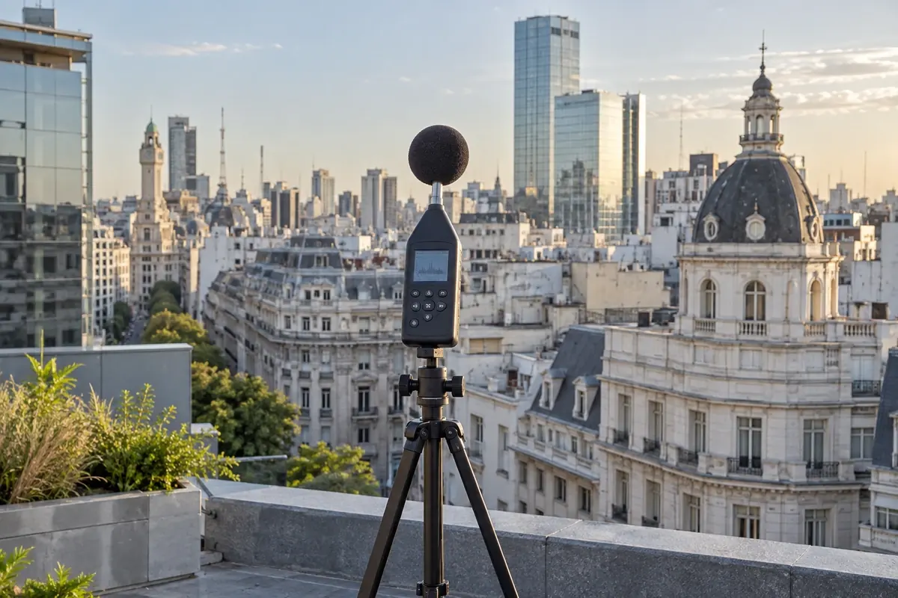

Reclamos por ruidos molestos
Conflictos por ruido que requieren evaluar objetivamente sus niveles e impacto.

Medimos, evaluamos y documentamos cada situación acústica con respaldo técnico.
Contanos tu casoVer cómo trabajamosRealizamos pericias en acústica, evaluaciones por ruidos molestos, Inscripciones RAC y Evaluaciones de Impacto Acústico, brindando mediciones, análisis y documentación técnica para respaldar trámites, reclamos, conflictos o decisiones profesionales.
Trabajamos sobre requerimientos vinculados a la Ley 1540 en la Ciudad de Buenos Aires y evaluaciones de ruido según IRAM 4062, entre otras condiciones normativas aplicables a cada caso.
Una situación acústica necesita evidencia clara. Evaluamos los niveles de ruido y preparamos el respaldo técnico de cada caso.
Conflictos por ruido que requieren evaluar objetivamente sus niveles e impacto.
Casos judiciales o extrajudiciales que necesitan mediciones, análisis e informes técnicos.
Actividades alcanzadas por requisitos de CABA que necesitan evaluación acústica y documentación técnica.
Proyectos o actividades que requieren analizar su incidencia sonora y documentar sus condiciones.
Evaluación de ruidos molestos mediante criterios normalizados de medición y análisis.
Requerimientos de autoridades o profesionales que necesitan una respuesta técnica documentada.
Contanos qué situación necesitás evaluar.
Evaluamos cada situación según su contexto y la normativa aplicable, con mediciones y documentación técnica para respaldar trámites, reclamos y decisiones profesionales.

Registro de niveles de ruido y condiciones de medición para una evaluación trazable.

Análisis de ruidos molestos, impacto acústico y criterios de evaluación según cada caso.

Documentación para pericias en acústica, inscripciones RAC, evaluaciones de impacto e informes según IRAM 4062.
Trabajamos con profesionales matriculados e instrumental homologado y con certificados de calibración vigentes, asegurando trazabilidad y validez técnica en cada intervención.
Del diagnóstico a una decisión técnicamente fundamentada.

01 / LECTURA TÉCNICAAlcance y marco de evaluación definidos
02 / LECTURA TÉCNICAMediciones y condiciones documentadas
03 / LECTURA TÉCNICAResultados interpretados según el caso
04 / LECTURA TÉCNICAInforme o documentación de respaldo
Relevamos el contexto, los antecedentes, el tipo de conflicto o trámite y la normativa aplicable para definir correctamente qué debe evaluarse.
RESULTADOAlcance y marco de evaluación definidos
Realizamos las mediciones necesarias con instrumental homologado y calibración vigente, registrando las condiciones relevantes para asegurar trazabilidad técnica.
RESULTADOMediciones y condiciones documentadas
Evaluamos los resultados según el marco normativo y técnico correspondiente, considerando las particularidades de cada situación.
RESULTADOResultados interpretados según el caso
Preparamos el informe, pericia o documentación necesaria para acompañar el trámite, reclamo, presentación o decisión profesional.
RESULTADOInforme o documentación de respaldo
Cada intervención se desarrolla con criterios técnicos verificables, trazabilidad documental y aplicación del marco normativo correspondiente.
Experiencia en ingeniería acústica aplicada a evaluaciones normativas, conflictos por ruidos molestos, habilitaciones y pericias técnicas.
Intervenimos como peritos de oficio y de parte, asesores técnicos y profesionales responsables. Evaluamos cada caso en su contexto técnico, normativo y documental.
Mediciones, interpretación de resultados y respaldo técnico para cada caso.
Impacto acústico, inscripción RAC y evaluaciones según IRAM 4062.
Asesoramiento técnico ante ruidos molestos, conflictos e intimaciones.
Cada proyecto tiene sus particularidades. Empecemos por resolver las dudas más habituales.
¿Tenés otra consulta? HablemosIntervenimos en conflictos por ruidos molestos, pericias técnicas, Inscripciones RAC, Evaluaciones de Impacto Acústico, habilitaciones, reclamos e intimaciones, entre otros casos donde sea necesario contar con una evaluación acústica y documentación técnica con respaldo profesional.
No siempre. Una medición debe interpretarse dentro del contexto técnico y normativo correspondiente. Por eso analizamos cada caso considerando las condiciones de medición, la normativa aplicable, los antecedentes y el objetivo de la intervención.
Nuestra base operativa se encuentra en Buenos Aires, pero trabajamos en casos y proyectos de toda la región, contemplando traslados, relevamientos y actividades en sitio cuando son necesarios.
Contanos brevemente la situación. Podemos ayudarte a definir qué evaluar, qué documentación necesitás y cuál debería ser el próximo paso técnico.
Contanos qué necesitás resolver y coordinemos una conversación.